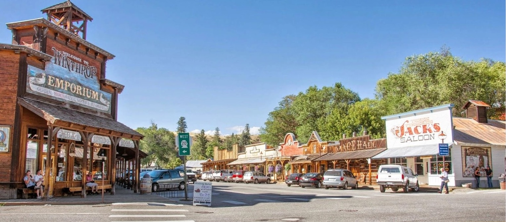
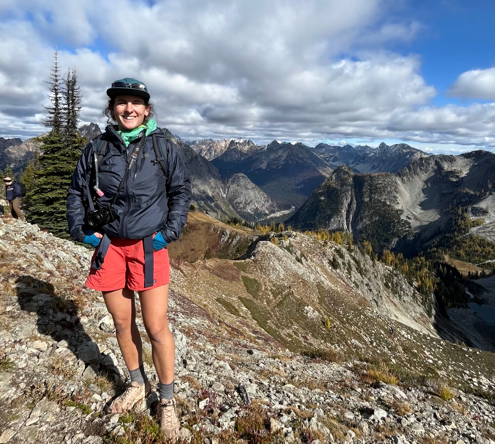
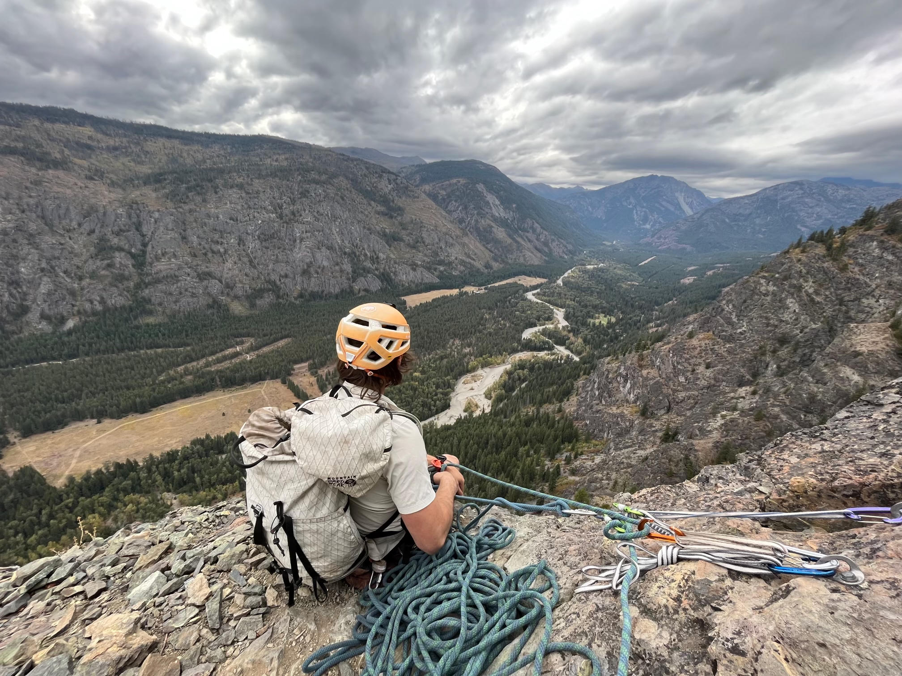
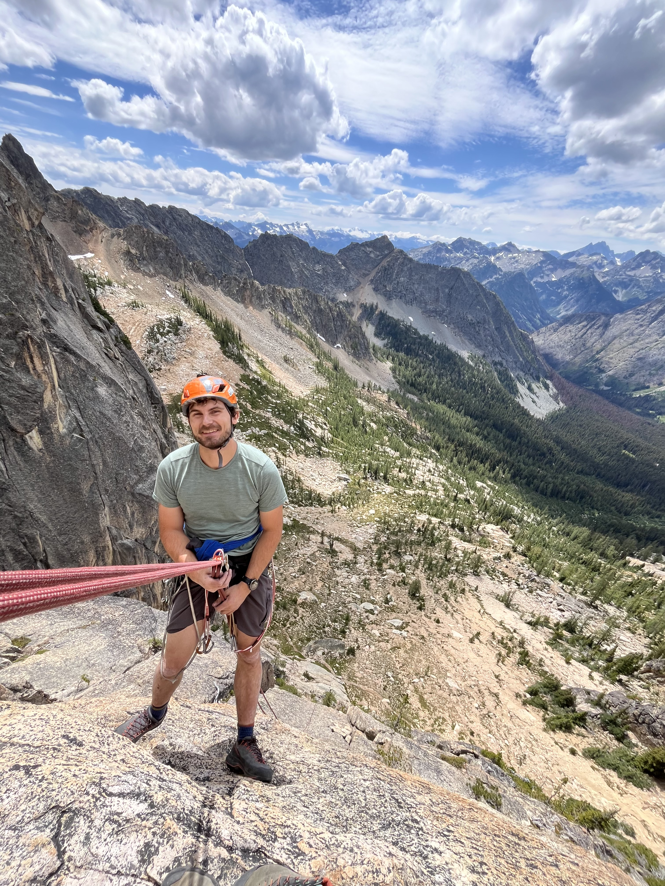

Some of our favorite spots in Winthrop:
- Rocking Horse Bakery - Coffee and pastries
- Old Schoolhouse Brewery - Beer and pub food
- East 20 Pizza - Pizza and beer
- Sheri's Sweet Shoppe - Ice cream
- Three Fingered Jack's - Dive bar with pub food. The oldest (legal) saloon in the state!
- Methow Valley Cider House (They told us we were a cute couple here!)

In Mazama:
- Mazama Public House – awesome beer and food minutes away from great climbing
- Mazama Store & Bakery – great bread, pastries and sundries as well as the best Goat merch (you’ve probably seen Kate & Roger repping their Mazama shirts!)
In Twisp:
- Cinnamon Twisp Bakery - Excellent bagels, sandwiches and pastries
Hiking:
- Washington Trails Association is the best resource for all things hiking!
- Some faves:
- Kate will be hiking Maple Pass Loop on Saturday, July 3rd
- Blue Lake (Washington Pass): 4.5 miles, ~1000 feet of elevation gain.
- Patterson Mountain (Near Winthrop): About 4 miles with roughly 1,000 feet of gain.
- Hidden Lake Lookout (on the drive from Seattle): 8 miles round trip with ~3,300 feet of gain.

Biking:
- There are tons of awesome mountain biking trails in and around Winthrop, and several locations to rent bikes in town.
Climbing:
- Mazama is home to numerous sport crags, including the longest sport route in the US, Flyboys. Check out Goat Wall and feel free to reach out with any questions if you’re interested in climbing.
- Roger is a planning a multi-pitch excursion to Washington Pass for Saturday

